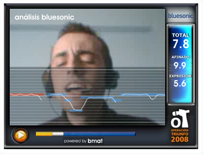

Turns out that run-away recommender systems are NOT responsible for all of the bad music out there:
Tuesday Feb 19, 2008
Monday Feb 18, 2008
Next week I shall be attending the SanFran Music Tech Summit. I'll be moderating a panel on music recommendation and discovery. Now, I've seen lots of panels and have even been on a few of them in my day. Most panels don't seem to live up to their billing and some turn into real train wrecks. As the panel moderator, my primary job will be to minimize the suckage - to make sure that the panel is interesting, informative and hopefully entertaining. I asked my friend, Chris how to moderate a panel (he's a writer and interviewer who has conducted a few panels that didn't suck) - he says that he likes to prepare his questions ahead of times. He says that 'good questions, put simply, are questions that ask something fairly specific but don't lead to a "yes" or "no" answer. And challenging someone to explain things that are unclear, unproven or contradictory makes for good discussion. "You talk about A - but can this really work?" "You used to think A, why do you now think B?"' - good advice.
Guy Kawasaki offers a set of tips on how to be a great moderator. Summarized here:
- Don't over-prepare the panelists
- Do prepare yourself in advance
- Never let the panelists use PowerPoint
- Never let the panelists do anything special
- Make them introduce themselves in thirty seconds
- Break eye contact with the panelists
- Make everyone else look smart
- Stand up for the Audience
- Involve the Audience
- Seize the day
Sunday Feb 17, 2008
BMAT - the innovative, Barcelona-based music technology company, is powering the online casting of 'Operacion Triunfo' - an American Idol-style talent show. From what I can tell (the site is in Spanish), the BMAT technology (called Bluesonic), will analyze a singer's performance and score it. According to BMAT, this is the only technology in the world that can asses the skills of a singer without a song reference.

This system is based on technology that was developed at the Music Technology Group at Universtat Pompeu Fabra in Barcelona. (Thanks for the tip, Oscar)
Friday Feb 15, 2008
The folks over at Last.fm just put some pictures up on flickr of their new global DB machine. It looks like a Sun x4450 - good choice! This machine supports 128GB of ram, and judging by the photos, Last.fm got a fully loaded machine.


Check out the 16-core porn at last.fm's flicker page.
Thursday Feb 14, 2008
Spotify, a private beta, next-generation, celestial jukebox has pushed out a new feature. You can now link directly to a time offset within a song. Just append the time offset to the url. For example, here's a link directly to my favorite short organ solo: spotify:track:5ilQibGPcaQvy8jf7OQI5H#2:30
Direct linking to passages in music opens up all sorts of interesting opportunities: Playlists with all of the best guitar solos (and just the solos, not all that extra vocal padding), mixtapes filled with just the bridges, a Valentine's day mix with nothing but "I Love You" lyric snippets - the possibilities are endless. Couple this with social tagging, and we can have phrase-level access to our music. Imagine going to last.fm or spotify and playing 'face-melting organ solos' radio and be treated to an endless mix of Keith Emerson, Rick Wakeman and Jimmy Smith, without all of those guitars messing things up.
To make this happen though, Spotify will need to make a change - we need to be able to specify not just when a phrase starts, but when it ends as well. As it stands (as far as I can tell), I can specify the point to start playing a song, but not when it ends. What we really need is a way to specify the start and the end of the phrase. Something like this would do: spotify:track:5ilQibGPcaQvy8jf7OQI5H#2:30#2:45 This would yield a phrase that would start two and a half minutes into the song and finish 15 seconds later.
I'm really impressed with all of the
things Spotify is doing - especially how they are working to make all of
their music - tracks, albums, artists, playlists and now phrases,
reference-able via a URL. I hope they open their doors to
the general public soon. (but not too soon).
Wednesday Feb 13, 2008
One great thing about interns, is that they bring new ideas and new tastes to the lab. Last year, Thierry brought, among other things, his preference for Aphex Twin. Since then, I've been listening and enjoying Aphex Twin (much to the dismay of my office neighbor Steve, who swears he hears Pac Man and DTMF tones in every Aphex track).
This image sums up Aphex Twin pretty well:

The music in this picture would probably take a few of the top spots in Don Byrd's Extremes of Conventional Music Notation (if it were conventional, of course).
Listen to music like Aphex Twin at last.fm:
Tuesday Feb 12, 2008
Last week I went over to Bentley college to talk about recommender systems for a class on user-centered design. Not because I know anything about user-centered design - quite the opposite. I'm hoping that some of the students in the class will apply their user-centered design skills to help us improve the user experience of our recommender. It was fun talking to the class, Managing a User-Centered Design Team. The students asked great questions, and seemed ready to dive in.
I've promised to leave some pointers to some background reading for usability and recommender systems, so I'll be posting links in this blog post as I come across them.
The first article is Interaction Design for Recommender Systems by Kirsten Swearingen, and Rashmi Sinha. This article presents a study of user interaction with 11 online recommender systems. Of particular interest is the observations about the role of transparency in recommendations. (Note also that author Rashmi Sinha has written some excellent articles about tagging as well: A cognitive analysis of tagging, and a Social Analysis of Tagging).
Update: Andre Vellino suggests Nava Tintarev's "A Survey of Explanations in Recommender Systems"
My favorite Valentine's day song is Emerson, Lake and Palmer's When The Apple Blossoms Bloom In The Windmills Of Your Mind I'll Be Your Valentine - It is, of course, an instrumental - I mainly like it for its gratuitously long title - great for testing to make sure that all of your database tables are sized properly. And if you are looking for more songs with gratuitously long titles, be sure to check out this last.fm journal entry by Carali: Ridiculously Long Song Titles
My favorite from the list is: Dramatic Pause of Silence to Signify the End of the Album and Beginning of Additional Songs Included on the CD to Make People Feel Better About Buying the CD Instead of the Vinyl Version by kid606.
Live streaming radio is available for your iPhone. Just point your iPhone (or iTouch) Safari browser at www.musicradio.com
This is still currently a prototype - the primary goal being to
demonstrate that people are still interested in radio and devices like
the iPhone are good candidates to serve up the traditional radio
content. Read more about this here: Live radio on the iPhone and the iPod touch.
Right now I am listening to the traffic report for the M2 - via Classic
FM Drivetime - (it is the end of the day rush hour in London). It's a
bit surreal.
Last week, I suggested that the MIR community change its name
from 'Music Information Retrieval' to something a bit more inclusive
such as 'Music Intelligence Research' as a way to better describe the
activities of the community. Since then there has been an
excellent comment thread debating the issue. Don Byrd describes
his attempts to convince the ISMIR Steering committee to change the name
to 'Music Information Research', while Jeremy Pickens offers a
persuasive counter-argument. It is an interesting comment thread -
if you are in the MIR community I suggest you read it and offer your opinion.
Thursday Feb 07, 2008
 There's
an ever growing number of videos on the web. YouTube seems to
have an endless supply of everything from professional documentaries to
phonecam captures of the latest campus tasing. Despite this video
glut, finding interesting videos is not so easy. My current
approach is to go to YouTube or Digg and just watch the most popular
videos of the day. It's not too satisfying. A video of a 30
second car crash has a much better chance of making these charts
than a thoughtful, well-crafted film. Clearly tools for helping us
explore this long tail of video will be increasingly important.
There's
an ever growing number of videos on the web. YouTube seems to
have an endless supply of everything from professional documentaries to
phonecam captures of the latest campus tasing. Despite this video
glut, finding interesting videos is not so easy. My current
approach is to go to YouTube or Digg and just watch the most popular
videos of the day. It's not too satisfying. A video of a 30
second car crash has a much better chance of making these charts
than a thoughtful, well-crafted film. Clearly tools for helping us
explore this long tail of video will be increasingly important.
ffwd is new service (still in private beta), that is hoping to help you find discover web video. I've taken it for a quick spin. They have a pretty nifty enrollment process - where you click on shows that you like so they can get an idea of your taste. Once you've selected your shows they assign you a video personality based upon your selections (I'm a 'comedy writer', apparently I like comedies). Once you are enrolled you can start to discover videos.
The video discovery is labeled as 'alpha' and they aren't kidding. The recommendations don't seem to be related to what I like at all. They offered reality shows (The Apprentice, Extreme Makeover Home Edition), weight loss success stories from San Antonio, a 'sexy webcam girl', nothing that I was interested in. The videos are coming from video sharing sites like iFilm and YouTube. Since they are in alpha, we can forgive them their recommendations, especially since they do seem to be looking for the right type of people to build their recommender. They have a job posting for an AI expert with skills like:
- computational linguistics
- collaborative filtering
- behavioral profiling
- relationship mapping
- semantic clustering
- symbolic systems
- Bayesian statistics
- feedback analysis
- personalized search
That's a pretty good sign. I think ffwd is targeting a real void - video discovery on the web - it will be interesting to see if they can do better than what we see now on Digg or YouTube. Oh yeah, The ffwd blog is pretty interesting too.
Wednesday Feb 06, 2008
I recently stumbled upon the Syllabus for Don Byrd's course called: Organizing and Searching of Musical Information. Included in the syllabus is this gem:
The Fundamental Theorem of Music Informatics (maybe)
Music is created by humans for other humans, and humans can bring a tremendous amount of contextual knowledge to bear on anything they do; in fact, they can't avoid it, and they're rarely conscious of it. But (as of early 2008) computers can never bring much contextual knowledge to bear, often none at all, and never without being specifically programmed to do so. Therefore doing almost anything with music by computers is very difficult; many problems are essentially intractable. For the forseeable future, the only way to make significant progress is by doing as well as possible with very little context, thereby sidestepping the intractable problems. -- Don Byrd, 7 Jan. 2008
Don is saying that it is a long time before computers can understand music so we better do the best we can with our bag of frames.
The Music Information Retrieval Community is quite a diverse
collection of researchers. There are musicologists, librarians,
traditional NLP folk, plus the signal processing and machine learning
geeks. The ISMIR 2008 call for papers lists around 30 topic areas
including such diverse topics as compression, computational musicology,
music recommendation, score following and performance analysis. This
year's ISMIR is putting a 'singular premium' on submissions that span
two or more disciplines. Clearly topic diversity is important to our
research community.
I suggest that our the name of our
discipline 'Music Information Retrieval' may be too constraining,
and as such is reducing topic diversity. To me, the term 'music
information retrieval' constrains our discipline to tasks that extract
information from a body of music. The term seems to eliminate from
consideration a number of interesting topics including automatic
accompaniment, track alignment for playlisting, compression, automatic
annotation.
This sentiment was echoed at the recent meeting of NEMISIG. There were a number of researchers interested in tasks such as automatic scoring of personal photo and video streams, making new devices that allow people to directly affect the music that the are listening to, making new music from old (such as the jingler), reproducing performances of great (but dead) musicians. These problems are not strictly information retrieval.
If
we want to increase topic diversity in the MIR community perhaps it is
time to change our name to something that better describes the research
that is taking place in our community. I humbly
suggest that the term 'Music Intelligence Research' is a better
description of our research community.
Tuesday Feb 05, 2008
Over the last three years, in the Search Inside the Music project we've built a code base that we can use to explore, discover, visualize and recommend music. There's lots of music technology: signal processing, machine learning, data visualization, recommendation - and there's lots of software: Java, Python, databases, servlets, GWT, Java3D. We want to make this software available for the world to use and enjoy and so we are open sourcing the Search Inside the Music project. Our goal is to turn our research prototype into something that will be useful and interesting for an enthusiastic music fan or a music technologist. We are looking for a summer intern who can help us make this happen.
Some of the qualities of the ideal candidate:
- Hardcore Java code slinger - we've got lots of code - Netbeans a plus
- Passionate about music - we want someone who will want to use what they are building
- Familiar with open source development techniques - remote repositories, Mercurial, distributed teams
- Music technology a plus - if you know the difference between an FFT and an MFCC that'd be great
- Experience with Recommender Systems a plus
- Other tech that will help: 3D programming, data visualization, iTunes APIs, Python, database, Social Web (tagging, social graph)
Make no mistake - we are looking for a good coder who is very comfortable dealing with a large code base. If this is something up your alley, respond to the job posting here. (Note that this job posting mentions Project Aura which is an umbrella project that includes the Search Inside the Music project). Not only will this will be a fun way to spend the summer but you will also have the chance to be on the ground floor of an open source project with a potential for high impact in the music space. (And you even get paid!) You may want to read more information on internships @ Sun Labs.
Update: If you do respond to the job posting, send me an email too at Paul.Lamere @ sun.com - just to make sure that nothing falls through the cracks.
And just to whet your appetite here are some screenshots of SITM:


Monday Feb 04, 2008
In a new article in the Guardian,
Jemima Kiss suggests that "If web 2.0 could be summarized as
interaction, web 3.0 must be about recommendation and
personalization". Jemima hits the nail on the head when she says
that privacy, credibility and trust are more important than ever for the
next generation of tools we'll use to find content on the web.
She also wonders what the implications are for the music critic.
Will the machines replace the music review? Personally, I don't
think that will happen, but the dynamics of power certainly our
changing. The listening habits of millions of people can be strong
indication of what is 'good music' - perhaps more so than the opinion
of the few critics in the ivory towers.
This blog copyright 2010 by plamere

{kind=link}